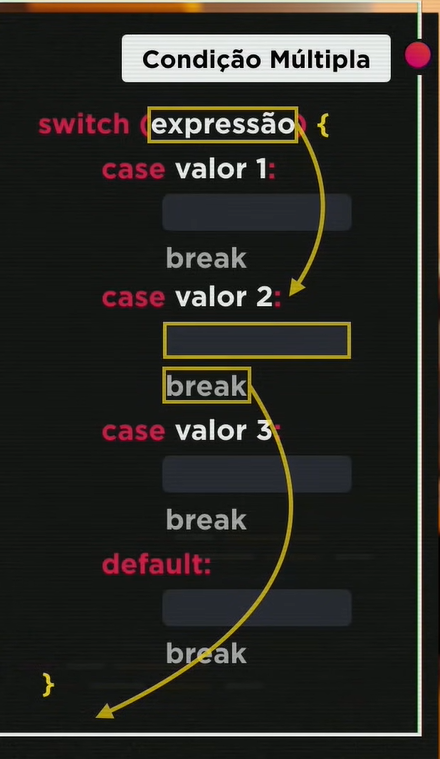
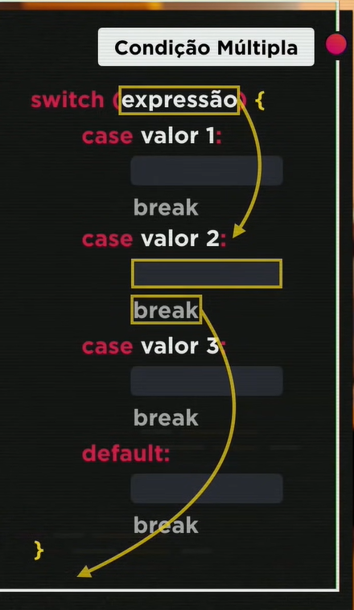

No exemplo acima, dentro dos parenteses usamos o valor da expressão, neste caso foi utilizado o '2', então ele foi direto ao case 2 e assim que ele passa pelo 'break' ele encerra indo até o final da condição como na imagem das setas.
O switch case é utilizado para valores pontuais (FIXOS), como de uma lista de valores ou como no exemplo abaixo os dias da semana. Acaba por ser mais fácil e digitamos menos código do que se utilizássemos o 'IF e ELSE' (Ex. Imagem 3 acima).
Se faz obrigatório o uso do 'BREAK' após cada valor, para que o comando não busque mais valores abaixo do necessário e já encontrado.
O último 'BREAK' tem o uso opcional, já que o código não tem mais nenhum case a vasculhar após o 'DEFAULT', mas como boa prática para iniciantes vamos utilizar em nosso código.